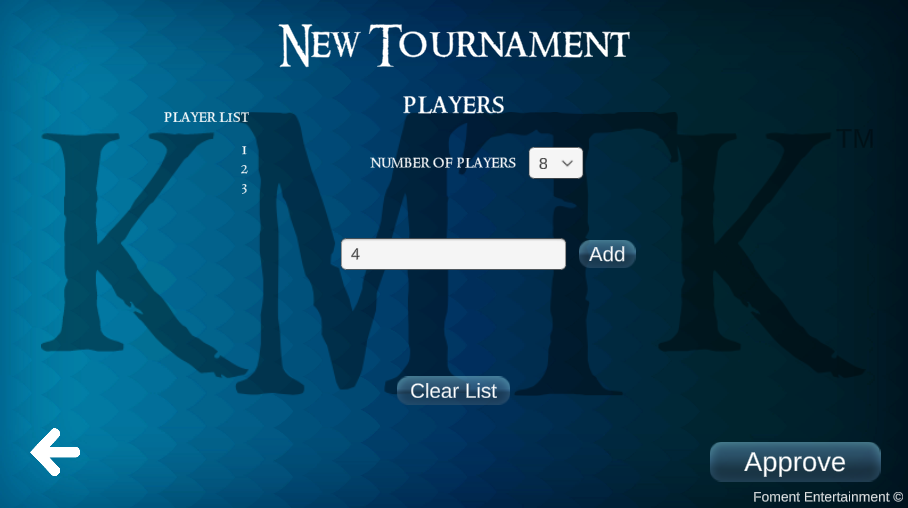
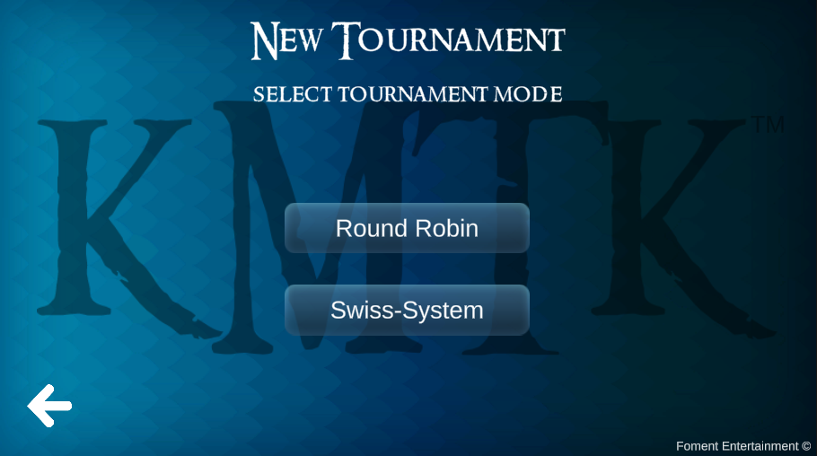
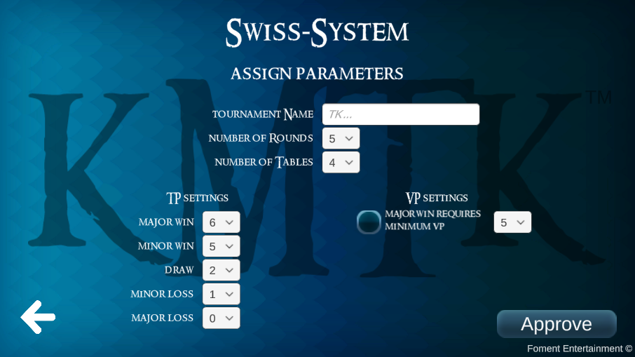
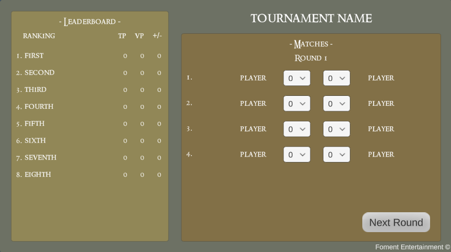
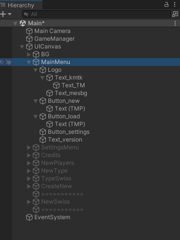
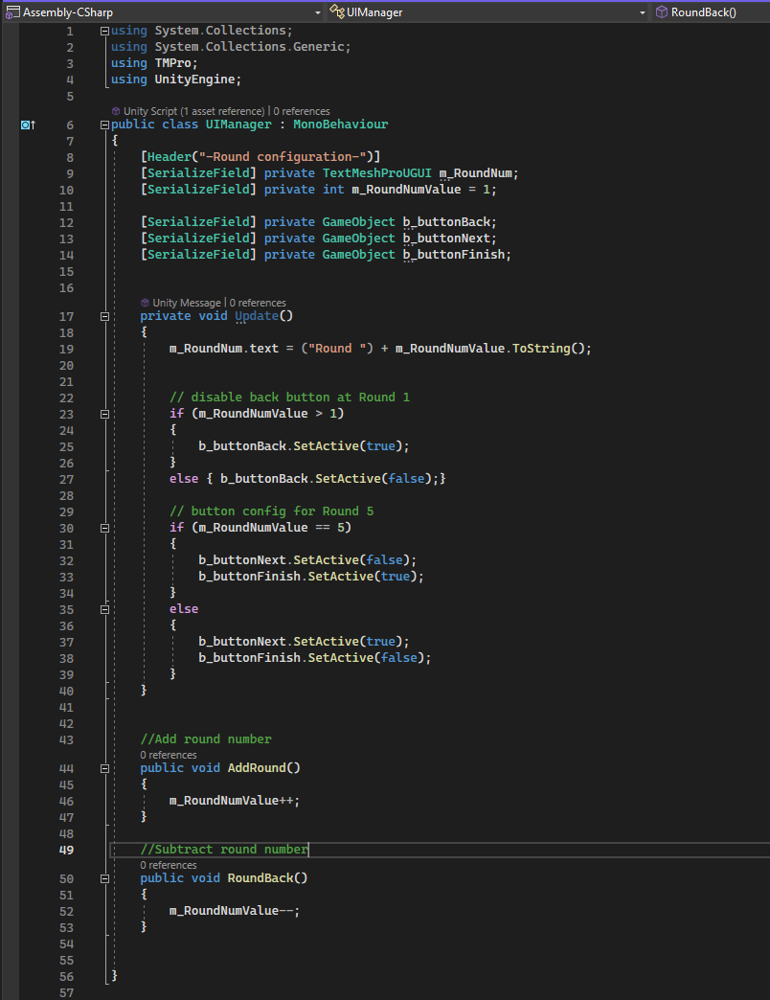
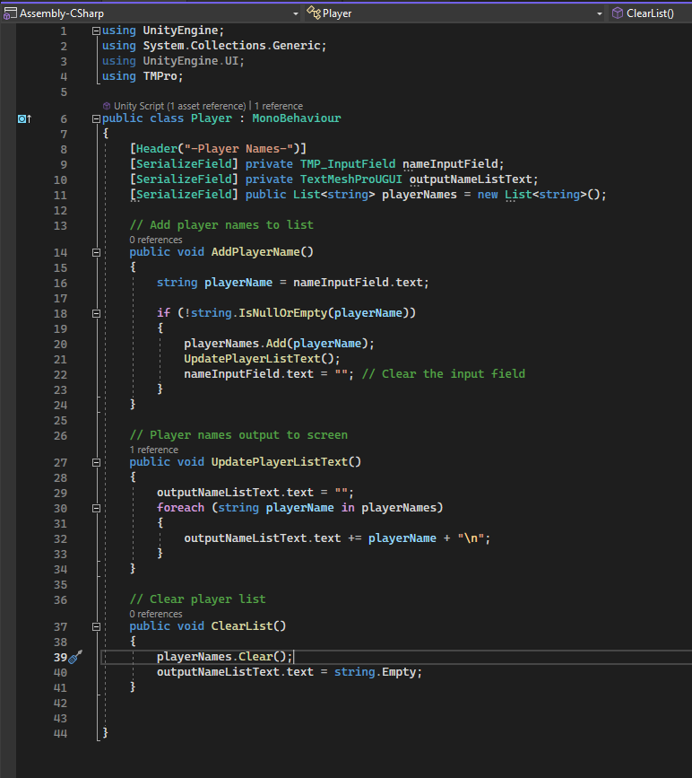

KMTK - Tournament Calculator
Status: Shelved /Summer 2024
Total work hours: 30
Tools: Unity, Visual Studio
Scripting: C#
Project Description
KMTK is an accronym which stands for "Keskimaan Turpakäräjät". This is the name of my Middle-Earth Strategy Battle Game (MESBG) blog on Wordpress, and is a tribute to my miniature gaming group. In recent months, our gaming group has grown so much so that our tournament format had to be adjusted to accomodate for the rise in player numbers. Several options were visited and a clear favorite was selected when I mentioned that I could try coding a tournament calculator.
The primary role of the tournament calculator would be to serve as a swiss-ranking calculator. In short, swiss-ranking is a way of pairing players in a tournament with less rounds than players. Traditionally, our tournament was a two day round-robin (everyone plays exactly once against everyone else). Now with more players, time constraints did not allow for a traditional round-robin, and so the swiss-ranking system was to be used and I was tasked with making a suitable calculator.
Since my goal was to make a mobile application that could be put for sale, I wanted to make a GUI to cater for any player groups in the world that run into the same set of problems with growing demand for tournament player slots.
I decided to ask my brother who is a colleague in the trade to come up with a logic for the problem and then I would implement it in a GUI using Unity. He got his C++ code to work in the console. Now all that was left for me to do was to implement it in Unity using C#.
Tasks
I wanted to make an app that would be easy to navigate and user-friendly. I selected some free assets from Unity's Asset store and began the tedious task of adding gameObjects, buttons, duplicating them and adding OnClick events to buttons, as well as enabling data entry such as player names. Once all tournament parameters have been entered, the tournament is ready to begin. At this point, it is necessary for the user to be able to enter scores from the games played in the tournament. The scores will be saved, and depending on the scores, the calculator should calculate the player pairings for the next round and each consecutive round without repeated pairings.
Functions
Most scripting for the GUI will be focusing on manipulation of UI game objects in Unity. So far there are a few place holder scripts (see images). I began scripting from the tournament view by giving functionality to the "Next Round" buttons. I also enabled the adding of player names to the tournament, but so far I have not saved that data anywhere. I presume that I will have to get acquinted with .json files before the end, if I want to save tournament data.
Solving Problems
So far the project has had little in terms of problems although I have become moderately concerned of my initial approach to the task at hand. Maybe if I started from scratch, I would focus more on implementing the logic first (or at least in part) before fully stocking up on the GUI.
Project Reel

Start Screen

Enter player names

Select tournament mode

Adjust tournament parameters

Tournament screen with rankings table
and round info

Unity project hierarchy

UIManager script

Player script